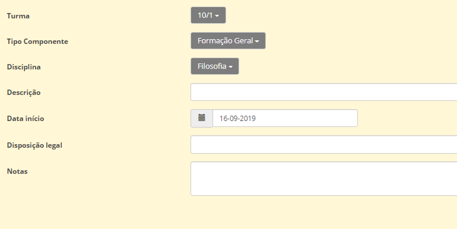
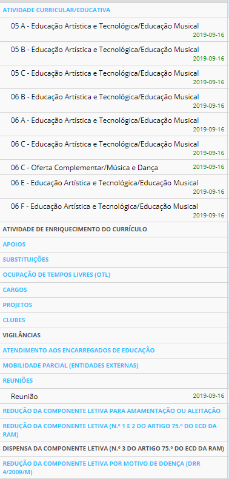

Horários
“Incumbe às escolas, no âmbito das competências legalmente cometidas aos órgãos de gestão e administração respetivos, proceder à organização e distribuição do serviço docente em sede das componentes letiva e não letiva, em quaisquer das suas modalidades (…)”
Despacho n.º 143/2013
Para este novo ano letivo, a Plataforma Place sentiu necessidade de reajustar e reorganizar o programa dos horários, de forma a dar resposta às escolas e às entidades responsáveis pela gestão do pessoal docente.
Segundo a legislação em vigor (Despacho nº143/2013), no horário de trabalho do pessoal docente é obrigatoriamente registada a totalidade das horas correspondentes à duração da respetiva prestação semanal de trabalho, com exceção da componente não letiva destinada a trabalho individual e da participação em reuniões de natureza pedagógica.
A organização do horário semanal dos docentes dos 2.º e 3.º ciclos do ensino básico, ensino secundário e educação especial faz-se, nos seguintes termos:

Antes de iniciarmos a abordagem dos horários, sentímos necessitade de apresentar-vos a Matriz dos Horários que sustenta toda a parte legal e prática na construção dos mesmos e em simultâneo os Cargos, construídos e enquadrados com base nas necessidades e interesse das escolas da região.
Desta forma, comecemos por aceder ao separador dos Docentes, clicar em cima da nome da docente que queremos trabalhar:
São apresentadas várias atividades legisladas para a construção do horário do professor, nas quais, as escolas irão completar de acordo com a gestão interna.

Vamos exemplificar o caso da Atividade curricular/educativa:
Neste campo escolhemos:
- Turma
- Tipo de componente
- Disciplinas
- Data de início (Muito importante por causa da geração de sumários)


No que diz respeito à descrição e as notas, estas são facultativas para as escolas.
Este procedimento aplica-se exatamente igual a todas as outras atividades presentes na construção dos horários dos docentes e das turmas.
No que concerne aos:
- Projetos
- Clubes
- Vigilâncias (aplica-se apenas ao 1º ciclo)
Importante
Deve aceder (no separador dos docentes) ao menu (lado direito) e clicar em Atividades/definições para poder criar inicialmente os projetos e clubes.

No que diz respeito aos Cargos, sendo a atividade que mais suscita dúvidas aos criadores dos horários, já se encontram todos pré-definidos, devendo ser selecionados de acordo com o pretendido.
Dica
Recomendamos a utilização da pesquisa por texto, de modo a filtrar os cargos disponíveis e facilitar a seleção.

Importante
Para os apoios, a escolha da turma é opcional.
Os Cargos que contêm a sigle EE no início destinam-se ao Ensino Especial.

Ao preenchermos os cargos, é importante definir onde se enquadra a carga horária atribuída à respetiva atividade, colocando um "visto" em cima do quadradinho respetivo. (Apenas estão disponíveis as opções válidas).

No que diz respeito ao extra do Crédito Global Horário, devem selecionar o artigo respetivo, dos quais apresentamos o seguinte esclarecimento (fornecido pela DRIG)


Quando as atividades estiverem todas bem definidas no perfil do professor (separador atividades), está na altura de desenhar o horário.

Aviso
Se for Atividade Curricular/Educativa, o horário é desenhado no horário da turma. As restantes atividades são desenhadas no horário do professor.
Já no separador horários (tanto da turma como do professor), devemos clicar em Editar e aqui começamos a preencher os dados importantes:
- Dia
- Horário
- Atividade
- Sala
Neste sentido, cabe às escolas ajustar pontualmente os horários dos docentes às necessidades escolares que ocorram ao longo do ano letivo, de forma a ser mantida a totalidade da carga horária das componentes letiva e não letiva.
Tendo em conta o atraso na disponibilização dos horários, pedimos que às escolas que entrem em contato com o Place (Via email) de forma a solicitar a geração das ocorrências (sumários) deste o início do ano letivo (Referir o dia de início). É igualmente importante salientar o tempo que a escolas pretendem que os sumários fiquem abertos (dias, uma semana, duas semanas...).
Atenção
Informamos que, neste momento, os totalizadores das horas ainda não estão totalmente operacionais.